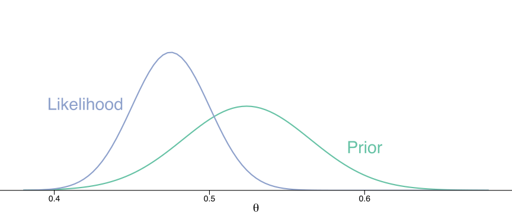

ROS Ch. 9-10
Minho Shin
Ph.D Student
Lab of Cognitive Neuroscience
Department of Brain Sciences
DGIST
Quick note on git: git submodule
Examples submodule is a git clone from https://github.com/avehtari/ROS-Examples
Load library
Load libraries that are going to be used throughout the two chapters.
Ch.9 Prediction and Bayesian inference
Predicting presidential vote share
hibbs <- here::here("Examples", "ElectionsEconomy", "data", "hibbs.dat") |>
read.table(header = TRUE) |>
as_tibble()
hibbs# A tibble: 16 × 5
year growth vote inc_party_candidate other_candidate
<int> <dbl> <dbl> <chr> <chr>
1 1952 2.4 44.6 Stevenson Eisenhower
2 1956 2.89 57.8 Eisenhower Stevenson
3 1960 0.85 49.9 Nixon Kennedy
4 1964 4.21 61.3 Johnson Goldwater
5 1968 3.02 49.6 Humphrey Nixon
6 1972 3.62 61.8 Nixon McGovern
7 1976 1.08 49.0 Ford Carter
8 1980 -0.39 44.7 Carter Reagan
9 1984 3.86 59.2 Reagan Mondale
10 1988 2.27 53.9 Bush, Sr. Dukakis
11 1992 0.38 46.6 Bush, Sr. Clinton
12 1996 1.04 54.7 Clinton Dole
13 2000 2.36 50.3 Gore Bush, Jr.
14 2004 1.72 51.2 Bush, Jr. Kerry
15 2008 0.1 46.3 McCain Obama
16 2012 0.95 52 Obama Romney Fit brms
M1 <- brm(
vote ~ growth,
data = hibbs,
refresh = 0,
file = here::here("Ch10", "m1_hibbs.rds")
)
print(M1) Family: gaussian
Links: mu = identity; sigma = identity
Formula: vote ~ growth
Data: hibbs (Number of observations: 16)
Draws: 4 chains, each with iter = 2000; warmup = 1000; thin = 1;
total post-warmup draws = 4000
Population-Level Effects:
Estimate Est.Error l-95% CI u-95% CI Rhat Bulk_ESS Tail_ESS
Intercept 46.19 1.80 42.64 49.69 1.00 3280 2267
growth 3.07 0.80 1.56 4.69 1.00 3339 2327
Family Specific Parameters:
Estimate Est.Error l-95% CI u-95% CI Rhat Bulk_ESS Tail_ESS
sigma 4.08 0.86 2.81 6.12 1.00 2660 2301
Draws were sampled using sampling(NUTS). For each parameter, Bulk_ESS
and Tail_ESS are effective sample size measures, and Rhat is the potential
scale reduction factor on split chains (at convergence, Rhat = 1).Prediction and uncertainty
| Description | Math | Function |
|---|---|---|
| point prediction | \(\hat{a} + \hat{b} x^{new}\) | predict |
| linear predictor with uncertainty | \(a + b x^{new}\) | posterior_linpred |
| expected prediction | \(E(y \vert x^{new})\) | posterior_epred |
| predictive distribution for a new observation | \(a + b x^{new} + \textrm{error}\) | posterior_predict |
Prediction and uncertainty
Let us do this by our own hands.
First, the point prediction y_point_pred is 52.34.
However, in brms, this is not directly equivalent to the result of predict, which is an alias of posterior_predict, that outputs
Prediction and uncertainty
Next, let’s compute linear predictor
One thing to be noted here, which I do not clearly understand, is that you get only one number if you use x_new, instead of as.numeric(x_new). The correct result should produce the number of predictions that are same as the number of total simulations.
Prediction and uncertainty
Comparing it with posterior_linpred:
Prediction and uncertainty
Which is equivalent to posterior_epred in linear regression:
Prediction and uncertainty
Finally, incorporating estimated uncertainty of the data,

Prediction and uncertainty
Let’s compare the uncertainty of both prediction, posterior_linpred and posterior_predict:
Bayesian synthesis
Let’s say the prior estimate of vote share follows \(\mathcal{N}(0.524, 0.041)\)
Code
prior_plot <- ggplot() +
geom_function(
fun = dnorm,
args = list(mean = 0.524, sd = 0.041),
colour = "#66c2a5",
size = 1
) +
annotate("text", x = 0.6, y = 5, label = "Prior", colour = "#66c2a5", size = 10) +
scale_x_continuous(
name = expression(theta),
limits = c(.38, .68),
breaks = c(.4, .5, .6)
) +
scale_y_continuous(
limits = c(0, 20),
expand = expansion(mult = c(0, .1))
) +
theme_void() +
theme(
axis.line.x = element_line(size = .5),
axis.ticks.x = element_line(size = .5, colour = "black"),
axis.ticks.length.x = unit(7, "points"),
axis.text.x = element_text(size = 14),
axis.title.x = element_text(size = 20)
)
prior_plot
Bayesian synthesis
And, the data estimate of vote share follows \(\mathcal{N}(0.475, 0.025)\)
Bayesian synthesis
Then, the posterior estimate of vote share follows \(\mathcal{N}(0.488, 0.021)\)
Bayesian synthesis
Let’s do this by ourselves.
x <- seq(.35, .7, by = .001)
prior <- dnorm(x, mean = 0.524, sd = 0.041)
likelihood <- dnorm(x, mean = 0.475, sd = 0.025)
posterior <- prior * likelihood / 5 # just for normalization
post_plot+
geom_line(aes(x = x, y = posterior),
colour = "deeppink", size = 2) +
annotate("text", x = 0.55, y = 17, label = "Prior * Likelihood",
colour = "deeppink", size = 10)Bayesian synthesis
Let’s do this by ourselves.
Product of two Gaussian PDFs
Let \(f(x)\) and \(g(x)\) be Gaussian PDFs with arbitrary means \(\mu_f\) and \(\mu_g\) and standard deviations \(\sigma_f\) and \(\sigma_g\)
\[ f(x) = \frac{1}{\sqrt{2\pi}\sigma_f} e^{- \frac{(x - \mu_f)^2}{2\sigma_f^2}} \textrm{ and } g(x) = \frac{1}{\sqrt{2\pi}\sigma_g} e^{- \frac{(x - \mu_g)^2}{2\sigma_g^2}} \]
Their product is
\[ f(x)g(x) = \frac{1}{2\pi\sigma_f\sigma_g} e^{- \left(\frac{(x - \mu_f)^2}{2\sigma_f^2} + \frac{(x - \mu_g)^2}{2\sigma_g^2}\right)} \]
Product of two Gaussian PDFs
Let \(S_{fg}\) a scaling factor, \(S_{fg} = \frac{1}{\sqrt{2\pi (\sigma_{f}^2 + \sigma_{g}^2)}} \exp \left[- \frac{(\mu_f - \mu_{g})^2}{2 (\sigma_{f}^2 + \sigma_{g}^2)}\right]\)
Then,
\[ \begin{align} f(x)g(x) &= \frac{1}{2\pi\sigma_f\sigma_g} e^{- \left(\frac{(x - \mu_f)^2}{2\sigma_f^2} + \frac{(x - \mu_g)^2}{2\sigma_g^2}\right)} \\ &= \frac{S_{fg}}{\sqrt{2\pi}\sigma_{fg}} \exp \left[- \frac{(x - \mu_{fg})^2}{2\sigma_{fg}^2}\right] \end{align} \]
where
\[ \sigma_{fg} = \sqrt{\frac{\sigma_f^2 \sigma_g^2}{\sigma_f^2 + \sigma_g^2}} \textrm{ and } \mu_{fg} = \frac{\mu_f \sigma_g^2 + \mu_g \sigma_f^2}{\sigma_f^2 + \sigma_g^2} \]
Ch.10 Linear regression with multiple predictors
Load data
# A tibble: 434 × 5
kid_score mom_hs mom_iq mom_work mom_age
<dbl> <dbl> <dbl> <dbl> <dbl>
1 65 1 121. 4 27
2 98 1 89.4 4 25
3 85 1 115. 4 27
4 83 1 99.4 3 25
5 115 1 92.7 4 27
6 98 0 108. 1 18
7 69 1 139. 4 20
8 106 1 125. 3 23
9 102 1 81.6 1 24
10 95 1 95.1 1 19
# … with 424 more rowsFit model
fit_3 <- brm(
kid_score ~ mom_hs + mom_iq,
data=kid_iq,
refresh = 0,
file = "kid_iq3.rds"
)
print(fit_3) Family: gaussian
Links: mu = identity; sigma = identity
Formula: kid_score ~ mom_hs + mom_iq
Data: kid_iq (Number of observations: 434)
Draws: 4 chains, each with iter = 2000; warmup = 1000; thin = 1;
total post-warmup draws = 4000
Population-Level Effects:
Estimate Est.Error l-95% CI u-95% CI Rhat Bulk_ESS Tail_ESS
Intercept 25.66 5.76 14.51 37.02 1.00 4354 3232
mom_hs 5.90 2.20 1.66 10.21 1.00 4251 3387
mom_iq 0.56 0.06 0.45 0.68 1.00 3859 2923
Family Specific Parameters:
Estimate Est.Error l-95% CI u-95% CI Rhat Bulk_ESS Tail_ESS
sigma 18.16 0.61 17.02 19.38 1.00 4259 3089
Draws were sampled using sampling(NUTS). For each parameter, Bulk_ESS
and Tail_ESS are effective sample size measures, and Rhat is the potential
scale reduction factor on split chains (at convergence, Rhat = 1).Fit model using interaction
fit_4 <- brm(
kid_score ~ mom_hs*mom_iq,
data=kid_iq,
refresh = 0,
file = "kid_iq4.rds"
)
print(fit_4) Family: gaussian
Links: mu = identity; sigma = identity
Formula: kid_score ~ mom_hs * mom_iq
Data: kid_iq (Number of observations: 434)
Draws: 4 chains, each with iter = 2000; warmup = 1000; thin = 1;
total post-warmup draws = 4000
Population-Level Effects:
Estimate Est.Error l-95% CI u-95% CI Rhat Bulk_ESS Tail_ESS
Intercept -11.76 13.26 -38.18 14.69 1.00 1295 1576
mom_hs 51.39 14.74 21.75 79.65 1.00 1119 1371
mom_iq 0.97 0.14 0.69 1.26 1.00 1249 1550
mom_hs:mom_iq -0.49 0.16 -0.79 -0.17 1.00 1073 1257
Family Specific Parameters:
Estimate Est.Error l-95% CI u-95% CI Rhat Bulk_ESS Tail_ESS
sigma 17.99 0.61 16.84 19.23 1.00 2475 2361
Draws were sampled using sampling(NUTS). For each parameter, Bulk_ESS
and Tail_ESS are effective sample size measures, and Rhat is the potential
scale reduction factor on split chains (at convergence, Rhat = 1).Writing the model
The classical linear regression model can bet written as
\[ y_i = \beta_1 X_{i1} + \cdots + \beta_k X_{ik} + \epsilon_i, \quad \textrm{for } i = 1, \dots, n \]
Using multivariate notation,
\[ y_i \sim \mathcal{N}(X_i \beta, \sigma^2), \quad \textrm{for } i = 1, \dots, n \]
or in more compact notation,
\[ y \sim \mathcal{N}(X\beta, \sigma^2 I) \]